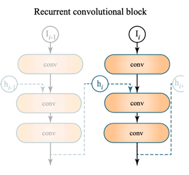

5 Real-Time Ray Tracing¶
2018年，NVIDIA发布基于Turing架构的GeForce RTX系列显卡，标志着实时光线追踪（RT）技术正式落地。RTX 可以做到每秒可处理100亿条光线（10 Giga rays/sec），相当于在实时应用中为每个像素提供一次光线采样。
因为每个像素做一次光线采样，要处理不仅仅一次光线
做过 GAMES101 assignment7 的知道，每个像素如果只做一次光线采样的话，造成最严重的结果就是出现大量的噪点。所以在实时光线追踪中一个很重要的内容就是降噪。
在仅使用每像素一次采样（1 SPP）的前提下，目标是实现高质量（无过模糊、无伪影、保留细节）与高速度（单帧去噪耗时<2毫秒）的实时渲染；然而，传统剪切滤波系列（如SF、AAF、FSF、MAAF等）、离线滤波方法（如IPP、BM3D、APR等）及深度学习模型（如CNN、自编码器等）均难以同时满足这两项严苛要求。
5.1 Temporal accumulation¶
工业级解决方案的核心在于“时序复用”：通过运动向量将当前帧像素映射回已去噪的前一帧对应位置，从而复用历史数据，实质上提升了每像素采样数（SPP）
利用前一帧的降噪结果，作为下一帧降噪的参考，这是工业级方案的核心思想
这个方法很重要的一点就是找到上一帧该点的位置，这样才能得到上一帧的降噪结果
G-buffer
G-Buffer（几何缓冲区）是在渲染过程中“免费”获取的每像素辅助信息，通常包含深度、法线、世界坐标等数据，仅属于屏幕空间范畴；

免费的含义就是在光栅化的时候，这些信息只需要顺手存储即可
反投影（Back Projection）用于确定当前帧像素 \(x\) 在上一帧 \(i−1\) 中的对应位置：若 G-Buffer 中已有世界坐标 \(s\) ，则直接使用；否则通过变换矩阵逆运算 \(s=M^{−1}V^{−1}P^{−1}E^{−1}x\)（仍需深度值 \(z\) ）推导；已知运动关系 \(s' \xrightarrow{T} s\) ，可得 \(s'=T^{−1}s\) ；最后将上一帧的世界坐标 \(s'\) 投影回屏幕空间，得到对应像素位置 \(x'=E'P'V'M's'\)
得到上一帧该点所在的像素之后，就得到相应的降噪结果作为该帧降噪的参考。
其中 \(\bar{C}^{(i)}\) 代表的是降噪后的结果，\(\tilde{C}^{(i)}\) 的是未降噪的结果，\(\alpha\) 的取值基本在 0.1-0.2，也就是说基本取决于上一帧的结果。

为什么感觉降噪后的结果比之前要亮好多
这是因为我们做光线追踪的时候，每个像素的值期望上等于真实值，但是受制于采样数，得到的值会有些非常大有些又非常小，由于第一张照片并不是在 HDR 屏幕中展示的，所以较高的值在屏幕中就被截断了，如果在 HDR 屏幕下来看，这两张图的亮度应该是相同的也必须是相同的。
5.2 Failure Cases¶
当然这个方法也是存在很多问题的，由于这种降噪方法在很大程度上依赖前一帧的结果
所以一个典型失败场景是场景切换（如从室内切换到室外战斗），此时前一帧数据与当前帧无对应关系，导致滤波器无法正确复用历史数据，进入“烧入期”（burn-in period）——即需重新积累有效时序信息的过渡阶段，期间可能出现画面闪烁、拖影或噪声残留等视觉瑕疵。

另一典型失败案例是“在走廊中后退行走”——此时因屏幕空间重投影失效（screen space issue），前一帧像素无法正确映射到当前帧对应位置，这就是利用屏幕空间信息的根本性的问题，无法得到屏幕以外的信息。

第三种典型失败案例是“背景突然显现”（disocclusion）——当物体移动或摄像机视角变化导致原本被遮挡的区域暴露时，前一帧无对应像素数据可供复用，滤波器被迫使用无效历史值，从而引发画面闪烁、伪影或延迟收敛等问题，需通过检测与重置机制缓解。
这个方法一个尝试性的解决方法是每次 back projection 的时候，检测一下得到的物体 ID 和之前是否是同一个，如果不是的话就可以动态调节混合权重 \(\alpha\)

在处理阴影等问题上，这个方法也不尽人意。例如在下面这个例子中，当光源移动时，阴影的运动向量难以准确计算（因阴影非实体对象），导致时序滤波错误地将历史阴影位置与当前帧对齐，产生“脱节”或“滞后”的视觉伪影

5.3 Implementation of Filtering¶
给图像做低通滤波，想要去除高频的噪声，输入为含噪图像 \(\tilde{C}\) 和可选逐像素变化的滤波器核 \(K\) ，输出为去噪后的平滑图像 \(\bar{C}\)。
之前常用的一个滤波核是高斯核（Gaussian filter），基于某点到中心点之间的距离来决定该点的权重。
For each pixel i
sum_of_weights = sum_of_weighted_values = 0.0
For each pixel j around i
Calculate the weight w_ij = G(|i - j|, sigma)
sum_of_weighted_values += w_ij * C^{input}[j]
sum_of_weights += w_ij
C^{output}[I] = sum_of_weighted_values / sum_of_weights
这里计算权重的时候，实际上可以忽略到前面的常系数，这里并不要求原始的分布是归一化的，而是在代码中完成归一化的过程。
但是高斯滤波的一个很大的问题就是把所有的高频率信息都给去除了，但是有些高频率信息比如说边界等等信息是我们想要留下来的。所以高斯滤波也会将边界给模糊掉

为了解决这个问题，提出 Bilateral filtering 技术。
如何处理边界的问题？也就是说如果某个点在边界上，采样的时候采样到边界另一边的点要尽可能地降低其权重。而边界的另一边与该点最大的区分就在于颜色有很大的不同，也就是说我们可以将颜色的距离考虑到权重上去
这样得到的滤波结果就很好地保留了边界的部分

由上面双边滤波的思路，我们是不是可以想：为什么不可以引入更多的特征来指导滤波的过程呢？这就是 Joint Bilateral Filtering 。我们可以利用渲染过程中免费获得的几何缓冲区（G-buffers），如法线、深度、位置、物体ID等，这些特征不仅丰富且无噪声。
Example

比如说在上面这张图中，要区分 A 和 B，考虑深度；区分 B 和 C，考虑法线；区分 D 和 E，考虑颜色。
那么在我们的权重式子中，可以将这些变量都考虑进去，然后调整相应的 \(\sigma\)，以得到结果。
同时高斯函数并非唯一可用的权重衰减函数，任何随“距离”递减的函数均可替代

5.4 Implementing Large Filters¶
在实现大尺寸滤波器时，对每个像素需遍历其 N×N 邻域，小滤波器（如 7×7）尚可接受，但大滤波器（如 64×64）会导致计算量剧增、性能不可承受。下面介绍两种针对大滤波器的高效解决方案。
一种方法是 Separate Passes，考虑 2D 高斯滤波，将其分解为先水平（1×N）后垂直（N×1）两次一维滤波，从而将每像素查询次数从 N² 降至 2N

2D高斯滤波器之所以能拆分为两个1D滤波，是因为其核函数具有可分离性
这样原先的滤波过程就可以完成拆分
所以说，想要完成 separate passes 需要权重函数是可分离的
理论上，双边滤波函数是不能被拆分的，但是有时候我们也可以强行这样做
还有一种方法是 Progressively Growing Sizes
核心思想是通过多次滤波，每次使用固定小核（如5×5），但逐步扩大采样间隔（2ⁱ倍），从而在不增加单次计算量的前提下模拟大尺度滤波效果；以a-trous小波为例，图示展示了从 i=0 到 i=2 层级中，中心像素如何随层数递增而聚合更远邻域的信息，最终实现高效的大范围模糊（如64²规模可近似为5次5×5滤波），显著降低计算复杂度。
{kind=link}
从更深层次的方式去理解这个方法：利用每一轮小核滤波将信号带宽压缩至当前采样率的奈奎斯特极限内，从而确保后续以2倍间隔（稀疏采样）操作时频谱周期延拓而不发生混叠；这种在逐级降低的分辨率上重复施加相同小核的过程，在频域表现为层层剥离更高频段，在空域则等效于感受野随层级指数级扩大。

这里可以回忆一下 GAMES101 中光栅化的部分，或者系统学习一下《信号与系统》
5.5 Outlier Removal¶
即使经过滤波，结果仍可能残留噪声甚至出现块状伪影（blocky artifacts），这往往源于画面中极少数异常明亮的像素点。因此，一个更有效的思路是：在滤波之前先识别并处理这些离群值（Outlier）。
对于 Outlier 的检测，可以基于该点局部统计的结果。对每个像素，考察其邻域（如7×7窗口），计算该邻域的均值 \(μ\) 和标准差 \(σ\)；若某像素值超出区间 \([μ − kσ, μ + kσ]\)，则判定为离群值。
对于 Outlier 的处理，并非直接丢弃或置零这些异常点，而是将其 clamping 到该合理范围内，强制设为区间的边界值。
Temporal Clamping
在时序复用中，前后两帧的颜色差异可能过大，这里既可以引入 Temporal Clamping 来解决这个问题，将上一帧的颜色限制到某个范围之内，然后再运用融合公式
5.6 Specific Filtering Approaches for RTRT¶
Spatiotemporal Variance-Guided Filtering (SVGF)¶
该方法与基础的时空去噪方案是类似的，多了一些方差分析与一些工程上的技巧
SVGF 是基于联合双边滤波上的改进，考虑三个因子去指导滤波
- 深度，若一个平面与相机的视角基本平行的时候，该平面上的两个点颜色基本一致，所以在滤波的时候应该相互贡献，但是由于深度差异比较大，按照之前的方法两者并不会产生什么贡献，所以将切平面的法线也引入到权重的计算当中
- 法线
注意，当使用微表面模型的时候，计算的是宏观的法线而不是微观扰动后的法线
- Luminance (grayscale color value) 传统方法仅依据颜色差异判定像素间的相互贡献：差异越大，权重越低。然而，噪声的存在会导致本应颜色相近的像素呈现出巨大的表观差异，若直接沿用传统逻辑，将错误地抑制这些像素间的有效信息融合。为此，我们在计算颜色权重时引入了区域方差（局部标准差）作为归一化因子，将“绝对颜色差”转化为“相对于局部噪声水平的相对差异”。
这里标准差的计算也有一些小的 tricks
- 首先在空间上计算 7*7 范围内的方差
- 然后在时间维度上进行平均
- 最后在该点周围的 3*3 范围内做平均
Recurrent denoising AutoEncoder (RAE)¶
利用循环去噪自编码器结构，在G-buffer辅助下自动完成从噪声图像到干净图像的转换，并隐式实现时序累积；关键结构是 AutoEncoder 和 Recurrent convolutional block
{kind=link}
上图为 AutoEncoder
{kind=link}

利用上述结构，自然而然地可以积累上一帧留下的信息
评论区
对你有帮助的话请给我个赞和 star => 欢迎跟我探讨！！！
欢迎跟我探讨！！！